Hệ thống trình ký ECUSSign Pro là phiên bản nâng cấp mới của ECUSSign trước đây, cho phép doanh nghiệp trình ký trên hệ thống DC (Data Center) chuyên nghiệp, có đường truyền đảm bảo tốc độ cao, nhanh chóng thuận tiện, đồng thời là phiên bản có tính phí cho bên trình ký khi đăng ký tài khoản trình ký, phiên bản này có các tính năng và điểm nổi bật vượt trội so các phiên bản trước như:
Trình ký và quản lý dữ liệu hiệu quả trên hệ thống Data center chuyên nghiệp.
Đường truyền đảm bảo tốc độ cao giúp cho việc trình và duyệt ký hầu như tức thì.
Tích hợp chức năng thông báo khi có chứng từ trình đến cho người duyệt ký biết, thông qua email hoặc tin nhắn SMS trên điện thoại.
Đây là phiên bản có tính phí sử dụng cho bên trình ký khi đăng ký tài khoản.
Hệ thống trình ký ECUSSignPro được thể hiện qua sơ đồ:
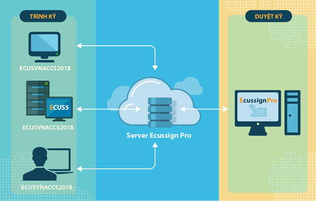
Doanh nghiệp có thể tham khảo video hướng dẫn dưới đây về quy trình thực hiện khai báo một tờ khai xuất khẩu hoàn chỉnh:
Hoặc tham khảo hướng dẫn chi tiết cách đăng ký và sử dụng hệ thống.
a) Đối với bên duyệt ký:
Bên duyệt ký là đối tượng có thiết bị chữ ký số, sử dụng phần mềm ECUSSignPro (miễn phí) để cấu hình danh sách các đối tượng được phép gửi trình ký đến, đồng thời tiến hành duyệt ký chứng từ.
a.1. Bước 1:Tải và cài đặt phần mềm ECUSSignPro
Tải và cài đặt phần mềm ECUSSign Pro tại địa chỉ website www.thaison.vn, lần đầu chạy chương trình sẽ ra cửa sổ để bạn nhập thông tin doanh nghiệp mình như sau:
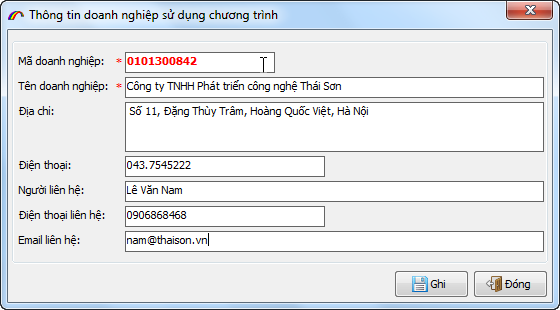
Sau khi nhập xong thông tin doanh nghiệp, bạn nhấn vào nút ghi để lưu lại, giao diện phần mềm sẽ hiện ra:
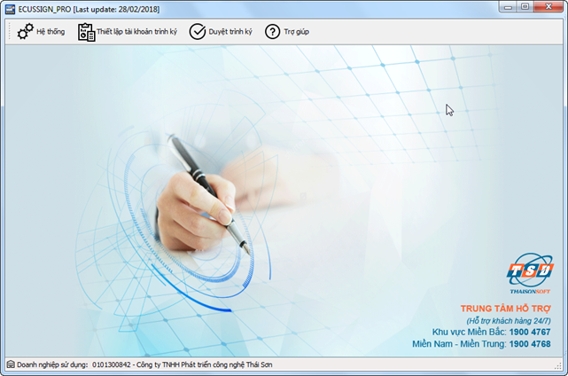
a.2. Bước 2: Thiết lập tài khoản trình ký
Đây là bước để bạn cấu hình danh sách tài khoản các bên được phép gửi chứng từ trình ký đến, để thực hiện bạn nhấn vào menu Thiết lập tài khoản trình ký:
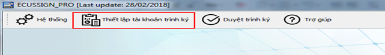
Màn hình thiết lập hiện ra như sau:
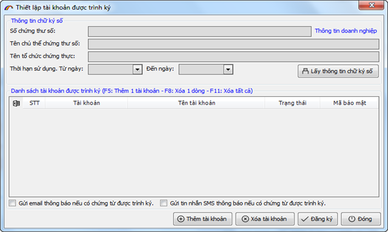
Lấy thông tin chữ ký số: Nhấn vào nút"Lấy thông tin chữ ký số" để lấy thông tin thiết bị chữ ký số sẽ ký cho các chứng từ của bên trình ký trong danh sách phía dưới, phần mềm sẽ hiện ra bảng danh sách chữ ký số để bạn chọn (lúc này thiết bị chữ ký số phải được cắm vào máy tính):
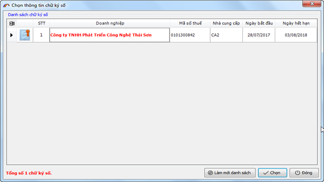
Sau khi chọn xong, thông tin chữ ký số sẽ hiện đầy đủ như sau:
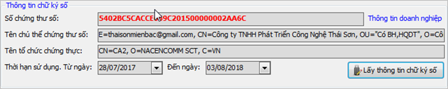
Thiết lập danh sách tài khoản trình ký: Để thêm mới tài khoản được trình ký, bạn sử phím tắt F5 trên bàn phím, một cửa sổ nhập tài khoản (email) sẽ hiện ra:
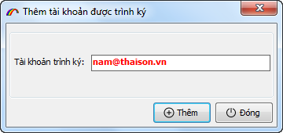
Bạn nhập vào tài khoản (địa chỉ email) do bên đăng ký trình ký cung cấp (tài khoản này đã được đăng ký với công ty Thái Sơn), sau đó nhấn vào nút Thêm để quay lại giao diện thiết lập:
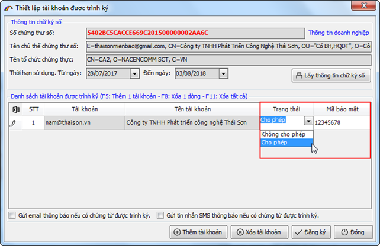
Trạng thái: Để bạn quyết định cho phép hoặc không cho phép tài khoản này được gửi trình ký chứng từ.
Mã bảo mật: Là mã do bạn tự đặt và phải cung cấp cho bên trình ký để họ cấu hình trình ký, nếu bên trình ký cấu hình sai mã bảo mật thì họ không thể trình ký chứng từ đến cho bạn được.
Thiết lập thông báo: Cuối cùng là mục thiết lập thông báo cho người duyệt ký khi có chứng từ được trình đến, thông qua email hoặc tin nhắn SMS, bạn chỉ cần tích / bỏ tích chọn vào 2 mục này để sử dụng thông báo hoặc không sử dụng:
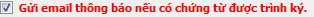
Cuối cùng bạn nhấn vào nút Đăng ký để hoàn tất việc thiết lập.
a.3. Bước 3: Duyệt ký chứng từ được gửi đến
Bạn nhấn vào menu Duyệt trình ký trên giao diện chính, lần đầu của phiên làm việc phần mềm sẽ yêu cầu bạn nhập mã PIN của thiết bị chữ ký số:
Sau khi đăng nhập thành công, giao diện chức năng Duyệt trình ký hiện ra như sau:
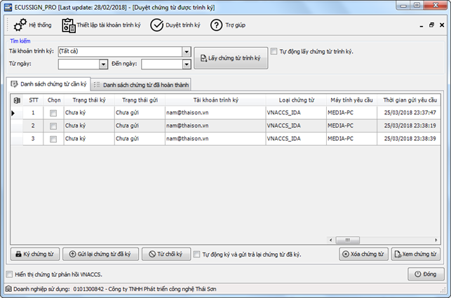
Tìm kiếm chứng từ được gửi đến:
Để tìm kiếm chứng từ được trình đến, bạn nhấn vào nút Lấy chứng từ trình ký, có thể lấy danh sách chứng từ của tất cả các tài khoản hoặc từng tài khoản bằng cách chọn tại mục tài khoản trình ký:
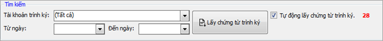
Bạn cũng có thể để phần mềm tự động lấy chứng từ trình ký sau mỗi 30 giây bằng cách tích chọn mục
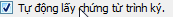
Thực hiện phê duyệt chứng từ:
Sau khi lấy được danh sách chứng từ trình ký, bạn có thể xem chi tiết bằng cách chọn chứng từ và nhấn vào Xem chứng từ hoặc xóa chứng từ bằng cách nhấn vào Xóa chứng từ
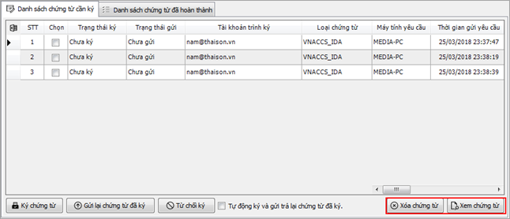
Ký số chứng từ: Khi đồng ý ký số cho chứng từ, bạn đánh dấu tích chọn chứng từ (có thể chọn nhiều chứng từ để ký) sau đó nhấn vào nút Ký số chứng từ, ký thành công trạng thái ký sẽ chuyển thành Đã ký:
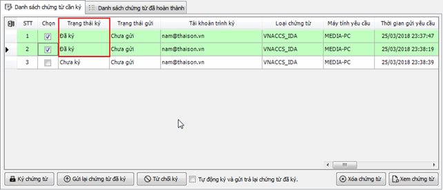
Gửi lại chứng từ đã ký: Khi chứng từ đã ký số thành công, bạn gửi lại cho người trình ký bằng cách nhấn vào nút Gửi lại chứng từ đã ký, hoàn thành gửi các chứng từ sẽ được chuyển sang tab Danh sách chứng từ đã hoàn thành để bạn có thể xem lại:
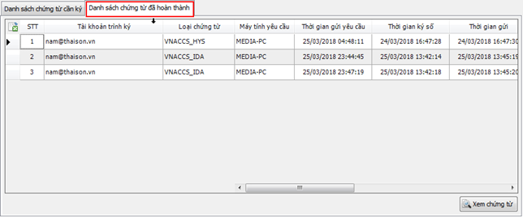
Từ chối ký chứng từ: Vì một lý do nào đó mà bạn không chấp nhận ký số cho chứng từ, hãy chọn chứng từ cần từ chối và nhấn vào nút Từ chối ký:
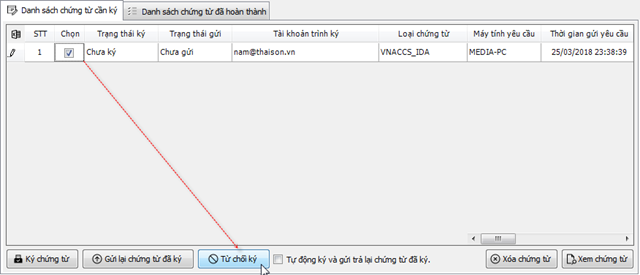
Bạn cũng có thể thiết lập để phần mềm tự động ký số và gửi lại chứng từ đã ký khi có chứng từ trình đến, bằng cách đánh dấu chọn vào mục
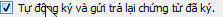
.
Phê duyệt cho nhiều doanh nghiệp khác:
Trong trường hợp duyệt ký cho nhiều mã số thuế khác nhau, bạn thực hiện theo hướng dẫn sau:
Bước 1: Nhập danh sách doanh nghiệp duyệt ký, bằng cách vào Hệ thống / Danh sách doanh nghiệp sử dụng chương trình:
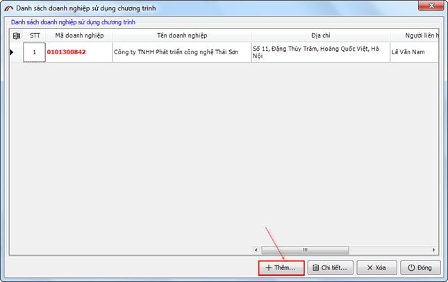
Bước 2: Chọn doanh nghiệp cần duyệt ký, bằng cách vào Hệ thống / Chọn doanh nghiệp sử dụng chương trình:
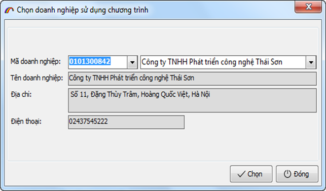
b) Đối với bên trình ký.
Bên trình ký là đối tượng khai báo chứng từ, tờ khai từ phần mềm ECUS5VNACCS nhưng không có hoặc không trực tiếp quản lý chữ ký số, khi khai báo phải trình chứng từ để người quản lý chữ ký số duyệt ký.
Lưu ý: Từ ngày 01/07/2024 Công ty Thái Sơn sẽ ngừng hỗ trợ dịch vụ trình ký trên các phiên bản phần mềm ECUS5VNACCS cũ từ Version 6.0 trở về trước. Vậy đề nghị quý doanh nghiệp đang sử dụng dịch vụ trình ký trên các phiên bản phần mềm cũ thực hiện nâng cấp phần mềm lên phiên bản mới nhất để có thể tiếp tục sử dụng dịch vụ trình ký, tránh làm gián đoạn quá trình khai báo thông quan hàng hóa của doanh nghiệp. Phiên bản hợp lệ có thể sử dụng được chức năng trình ký tính từ phiên bản 6.0.120 trở lên. Doanh nghiệp xem chi tiết thông báo tại đây.
b.1 Bước 1: Đăng ký tài khoản trình ký
Để có thể trình ký chứng từ thông qua hệ thống trình ký ECUSSignPro, bên trình ký thực hiện đăng ký tài khoản trình ký, đây là tài khoản có tính phí sử dụng theo gói, theo năm. Bạn vào menu Hệ thống / 5. Thiết lập sử dụng chữ ký số trên phần mềm ECUS5VNACCS 2018:
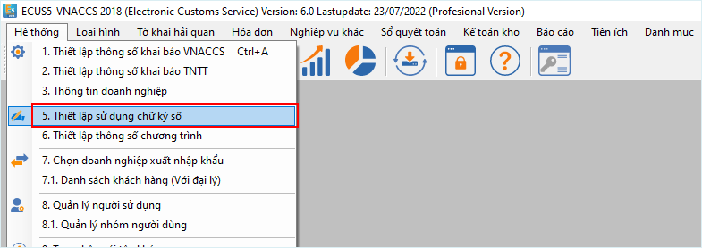
Màn hình thiết lập tài khoản trình ký hiện ra:
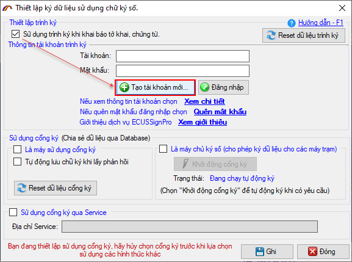
Bạn đánh dấu tích chọn vào mục Sử dụng trình ký khi khai báo chứng từ, tờ khai rồi nhấn vào Nhấn vào nút Tạo tài khoản mới để đăng ký, lúc này màn hình đăng ký sẽ hiện ra:
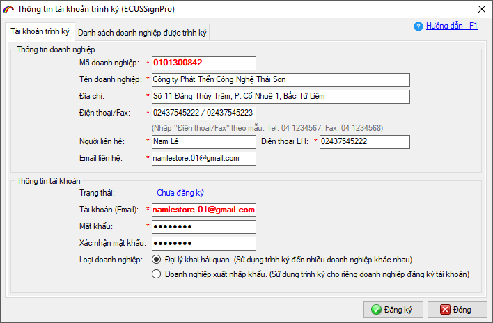
Tại đây, bạn tiến hành nhập đầy đủ thông tin cho mục:
Thông tin doanh nghiệp, và thông tin liên hệ: Đây là thông tin về doanh nghiệp của bạn như Mã số thuế, Tên và địa chỉ công ty, điện thoại, thông tin chi tiết người liên hệ để nhân viên Thái Sơn liên hệ khi cần thiết.
Thông tin tài khoản: Nhập vào tên tài khoản là địa chỉ email bạn muốn đăng ký và mật khẩu cho tài khoản (Lưu ý: Đây chính là tài khoản để bạn đăng nhập trình ký khi khai báo chứng từ, tờ khai trên phần mềm ECUS5VNACCS 2018, hãy ghi nhớ nó).
Cuối cùng, bạn nhấn vào nút Đăng ký lúc này sẽ có một bản đăng ký hiện ra để bạn xác nhận, với lưu ý:
Nếu đồng ý với các điều khoản và nội dung bản đăng ký thì bạn đánh dấu tích chọn vào mục
Ký điện tử bản đăng ký sử dụng: Nếu bạn ký số điện tử cho bản đăng ký thì đây được xem là hợp đồng đăng ký chính thức, bạn không cần bổ sung thêm chứng từ khác cho công ty Thái Sơn, trường hợp bạn không có chữ ký số để ký điện tử thì sau khi bạn gửi bản đăng ký, nhân viên phía công ty Thái Sơn sẽ liên hệ lại và yêu cầu bản gửi bản scan của một số chứng từ như GPKD....
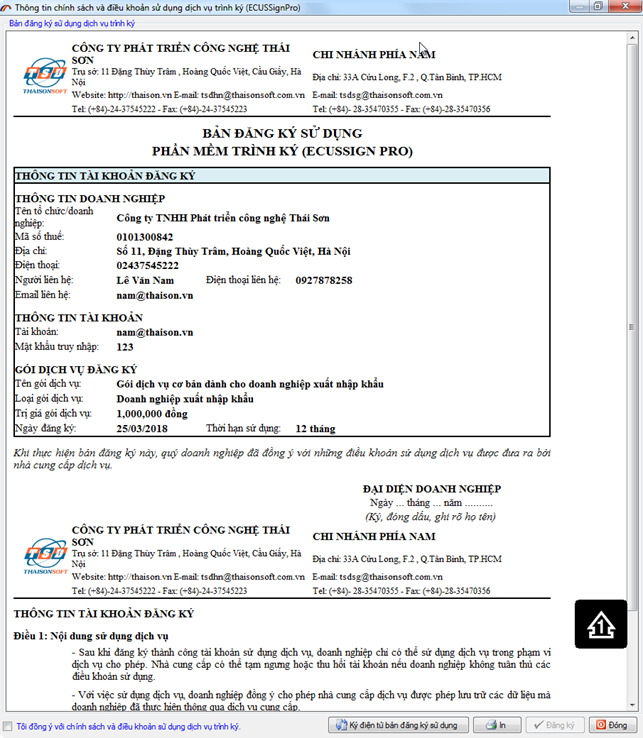
Tiếp theo bạn nhấn vào nút Đăng ký để xác nhận đăng ký chính thức, sau khi đăng ký thành công, tài khoản cần được kích hoạt mới sử dụng được, để kích hoạt có 2 cách thực hiện như sau:
Cách 1: Trường hợp doanh nghiệp bạn chưa hoặc không có thiết bị chữ ký số, thì phải chờ nhân viên phía công ty Thái Sơn kích hoạt trên hệ thống.
Cách 2: Trường hợp doanh nghiệp bạn đã có chữ ký số, có thể tự kích hoạt bằng cách nhấn vào nút Kích hoạt tài khoản bằng CKS:
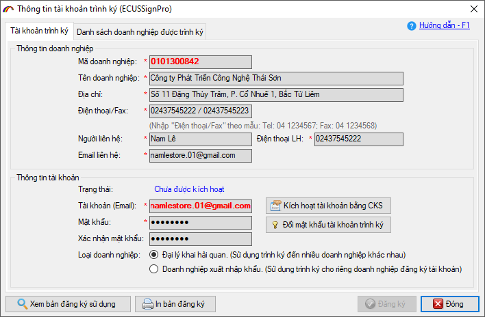
Một cửa sổ thông báo hiện ra, nhấn vào YES:
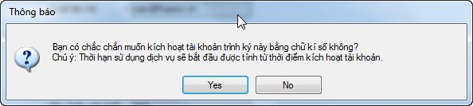
Chọn chữ ký số trong danh sách mới hiện ra:
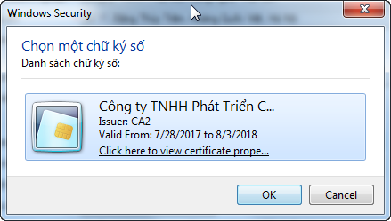
Nhập mã PIN cho thiết bị chữ ký số sau đó nhấn vào Đăng nhập
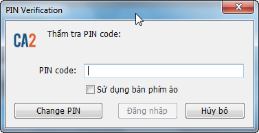
Khi có thông báo thành công hiện ra là công việc đăng ký tài khoản hoàn tất:
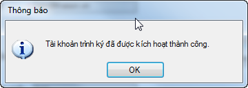
Lúc này bạn cung cấp tên tài khoản cho bên duyệt ký để họ thiết lập vào danh sách được trình ký, bên duyệt ký sẽ thông báo lại cho bạn một mã bảo mật (nếu có) để bạn thiết lập trước khi trình ký.
b.2.Bước 2: Trình ký chứng từ, tờ khai
Vậy sau đó làm thế nào để trình ký chứng từ? Bạn làm theo các bước sau đây:
Bước 1: Bạn vào menu Hệ thống / 5. Thiết lập sử dụng chữ ký số:
Màn hình chức năng hiện ra như sau:
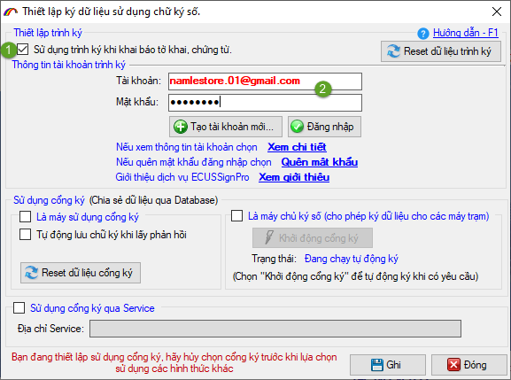
Đánh dấu tích chọn vào mục
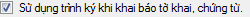
để sử dụng chức năng trình ký khi khai báo chứng từ.
Đăng nhập trình ký bằng tài khoản đã đăng ký.
Nhấn vào nút Ghi để lưu lại thông tin.
Bước 2: Khai báo và trình ký chứng từ trên phần mềm ECUS5VNACCS 2018
Các bước thêm mới và nhập chứng từ, tờ khai vẫn diễn ra bình thường, đến lúc bạn gửi đến hải quan thì phần mềm sẽ tự động kết nối và gửi chứng từ đến hệ thống trình ký:
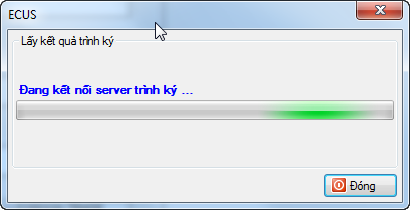
Khi bên duyệt ký nhận được chứng từ trình đến sẽ tiến hành duyệt ký chứng từ và trả lại để bạn tiếp tục khai báo, khi chứng từ đã được ký gửi lại phần mềm thông báo như sau:
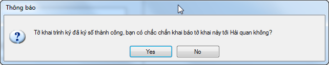
Bạn nhấn chọn YES để tiếp tục khai báo lên cơ quan Hải quan.
Lưu ý:
Sau khi gửi trình ký chứng từ, bạn có thể liên hệ để bên duyệt ký tiến hành duyệt ký và trả về ngay cho bạn.
Trường hợp chứng từ đã trình ký nhưng bên duyệt ký chưa ký và trả về ngay được, thì bạn có thể tắt phần đang khai báo và thực hiện sau, khi thực hiện khai báo lại phần mềm sẽ kết nối và lấy kết quả ký. Phần mềm chỉ thực hiện trình ký lại khi chứng từ có thay đổi thông tin đã gửi trình ký trước đó.